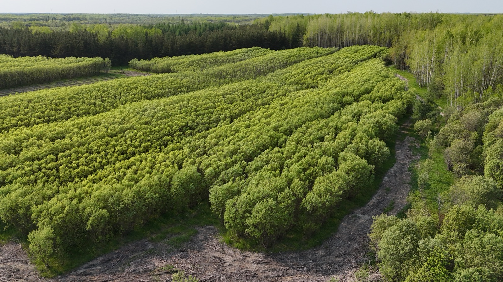

Le saule —
l'arbre aux superpouvoirs.
Évapotranspiration record, croissance fulgurante, séquestration de carbone, racines stabilisatrices, biodiversité hôte — la science derrière les capacités uniques du saule, et pourquoi Ramo en a fait l'arbre central de toutes ses solutions.
Évapotranspiration : une pompe biologique naturelle
La capacité d'évapotranspiration des saules est au cœur de leur utilité environnementale. Une revue de littérature majeure publiée dans le Journal of Environmental Management (Fredette et al., 2019)[1], compilant 57 études menées dans 16 pays et portant sur 19 espèces de saules, a établi un taux moyen d'évapotranspiration de 4,6 ± 4,2 mm/jour, avec des valeurs maximales atteignant 22,7 mm/jour pour le cultivar Salix miyabeana SX67 en marais filtrant.
À l'échelle d'un hectare de plantation, cette évapotranspiration équivaut à environ 46 m³ d'eau par jour. En conditions optimales, cette capacité peut dépasser 200 m³/ha/jour. Les facteurs déterminants sont l'approvisionnement en eau, la fertilisation et les conditions de croissance — davantage que l'espèce elle-même. C'est exactement ce principe que nous exploitons dans Evaplant® et Evacap™, nos technologies de traitement des eaux usées et d'infiltration par phytotechnologie.
mm/jour en moyenne
Taux d'évapotranspiration moyen du genre Salix, selon la méta-analyse de Fredette et al. (2019)[1] portant sur 57 études et 19 espèces. Cela équivaut à environ 46 m³ par hectare par jour.

Une croissance parmi les plus rapides du règne végétal
Les saules hybrides à croissance rapide figurent parmi les arbres les plus vigoureux au monde, avec des taux de croissance pouvant atteindre 3 à 3,5 mètres par an en conditions optimales. Un saule sain peut atteindre 9 à 15 mètres en seulement 10 à 15 ans. Cette croissance ralentit après la première décennie, lorsque l'énergie se redistribue de l'expansion verticale vers l'expansion latérale.
La disponibilité en eau est le facteur le plus déterminant : les saules en sol humide surpassent ceux en sol sec d'un facteur 2 à 3. C'est précisément cette « soif » qui fait des saules des alliés naturels pour la gestion des eaux usées et excédentaires.
Et surtout — détail souvent oublié — le saule capture du CO₂ dès sa première journée de croissance. Là où la plupart des essences mettent 5 à 10 ans à fixer du carbone de manière significative, le saule produit un impact environnemental mesurable dès la saison qui suit l'implantation.
Séquestration du carbone
Les plantations de saules en courte rotation constituent de véritables puits de carbone. Des essais en Italie méridionale ont démontré une fixation d'environ 24 900 kg de CO₂ par hectare par an dans la biomasse[2]. Une plantation de 12 ans en Pologne méridionale a mesuré une séquestration totale de 13,5 tonnes de carbone par hectare par an, incluant biomasse aérienne, racines grossières et racines fines.
Le carbone souterrain est une composante critique et souvent sous-estimée. Les sols sous plantations de saules accumulent entre 150 et 450 kg de carbone supplémentaire par hectare par an. En Suède, des plantations commerciales sur terres arables ont montré une séquestration moyenne de 3,5 tonnes de carbone par hectare par an dans la biomasse ligneuse, en plus de 0,4 tonne dans les sols[3].
kg CO₂/ha/an
Fixation de carbone mesurée dans la biomasse des plantations de saules en courte rotation, selon les essais de terrain en conditions méditerranéennes (MDPI Applied Sciences, 2020).

Un système racinaire puissant
Les racines des saules forment des réseaux denses et superficiels, typiquement à 0,5 à 0,9 mètre de profondeur, pouvant descendre jusqu'à 3 à 4,5 mètres dans certaines conditions. L'extension horizontale peut atteindre 30 mètres depuis le tronc — soit 3 à 4 fois la hauteur de l'arbre. Des études en Nouvelle-Zélande ont montré qu'après seulement 9 mois de croissance, les racines de certains cultivars atteignaient déjà 11 mètres d'extension[4].
Cette architecture racinaire fait des saules des champions de la stabilisation des sols et des berges. Les racines fines et denses forment un maillage juste sous la surface, retenant efficacement les particules de sol et limitant l'érosion — une propriété que Ramo met à profit dans les projets de végétalisation de sites dégradés, en milieu minier comme sur d'anciens sites d'enfouissement.
Biodiversité : un écosystème à lui seul
Les saules comptent parmi les plantes les plus importantes pour la biodiversité en milieu tempéré. Les recherches de l'entomologiste Douglas Tallamy classent les saules indigènes au deuxième rang après les chênes comme plantes hôtes pour les papillons et les mites[5]. Plus de 450 espèces d'insectes phytophages sont associées aux saules indigènes (Southwood, 1961)[6].
Parmi les premiers arbres à fleurir au printemps (dès le début avril), les saules fournissent une source critique de pollen et de nectar pour les abeilles, bourdons et autres pollinisateurs à un moment où peu d'autres ressources sont disponibles. La Xerces Society les classe comme essentiels pour les jardins de pollinisateurs. Leur structure touffue offre un habitat de nidification idéal : chardonnerets, parulines jaunes, colibris et de nombreuses autres espèces utilisent les saules pour nicher ou comme matériau de construction.
Quand le projet le permet, Ramo intègre d'autres essences indigènes autour des plantations de saules pour enrichir l'écosystème et accélérer la succession végétale naturelle.
Sources scientifiques
- [1] Fredette, C. et al. (2019). « Willows for environmental projects: A literature review of results on evapotranspiration rate and its driving factors across the genus Salix. » Journal of Environmental Management, 246, 730-741. PubMed ↗
- [2] Capuana, M. et al. (2020). « Modeling the Ecosystem Services Related to Phytoextraction: Carbon Sequestration Potential Using Willow and Poplar. » Applied Sciences, 10(22), 8011. MDPI ↗
- [3] Rytter, R.-M. (2012). « The potential of willow and poplar plantations as carbon sinks in Sweden. » Biomass and Bioenergy, 36, 86-95. ScienceDirect ↗
- [4] Phillips, C.J. et al. (2014). « Root growth of young poplar and willow planting types. » New Zealand Journal of Forestry Science, 44, 15. Springer ↗
- [5] Tallamy, D.W. (2007). Bringing Nature Home. Timber Press.
- [6] Southwood, T.R.E. (1961). « The number of species of insect associated with various trees. » Journal of Animal Ecology, 30(1), 1-8.
Continuez l'exploration.
60+ variétés cultivées au Québec
Pourquoi Ramo cultive autant d'espèces et comment chacune trouve sa place.
Lire →La culture du saule, étape par étape
Bouturage, plantation, recépage, récolte — le cycle complet d'une plantation Ramo.
Lire →20 ans de saules chez Ramo
L'histoire d'une filière bâtie sur le saule, depuis 2006.
Lire →Un projet où le saule peut faire la différence ?
Notre équipe vous accompagne de la conception à la mise en opération.
Nous joindre